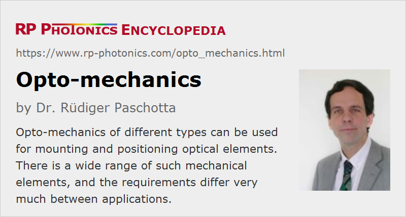

Opto-mechanics
Definition: mechanical elements used in optics
German: Optomechanik
How to cite the article; suggest additional literature
Author: Dr. Rüdiger Paschotta
Opto-mechanics means mechanical elements which are used in optics. The following product categories belong to opto-mechanics:
- Mounts: These are mechanical elements for mounting optical components such as mirrors, prisms, lenses, laser crystals, polarizers and fiber ends.
- Positioning equipment: Such equipment allows for the precise positioning of optical elements. For example, kinematic mirror holders allow one to precisely adjust the angular orientation of laser mirrors with micrometers screws. Other examples are linear translation stages and rotation stages.
Some opto-mechanics are sold separately, while other items are parts of more complex setups. Some examples:
- In a microscope, one requires precise mechanics for positioning of the specimen and adjusting the focus.
- A zoom photographic objective contains optical lenses and also a translation stage (possibly motorized) for moving some of the lenses in the setup.
- A fiber launch system may contain several translation stages combined with a V groove for mounting a fiber and an optical lens.
- An optical delay line may contain a long-distance computer-controlled translation stage.
Frequently, optical elements need to be carefully aligned during fabrication and possibly also later within the technical service. Therefore, opto-mechanics often need to offer precise alignment facilities, which are frequently based on manually operated micrometers screws and sometimes also contain motorized drives.
The requirements concerning accuracy and stability depends very much on the application. Some cases are not critical, for example the positioning of a nonlinear crystal with noncritical phase matching. In many cases, the transverse positioning of a lens is also not very critical. Particularly critical are applications in interferometers, where e.g. thermal induced length changes far below one micrometer can already have substantial impact on the performance. Also, laser resonators (particularly those for high-power lasers) require very precise and stable mirror mounts (see below), because they often exhibit a substantial alignment sensitivity. For such applications, fine mechanics of particularly high quality are required.
Prototyping and Permanent Setups
The requirements on opto-mechanical elements can be quite different depending on whether they are used in the context of building prototypes or permanent optical setups. Therefore, quite different realizations can be appropriate.
For prototyping, maximum flexibility is usually essential; one may frequently need to insert or remove optical elements, change their positions, etc. On the other hand, cost is less critical, since only low numbers of parts are handled. Also, uttermost mechanical stability and long lifetimes may not be critical for experimental tests, e.g. because the work can be done in a low-vibration environment.
Permanent setups usually do not need a substantial amount of flexibility, but have other requirements such as the ease of fabrication (possibly involving robots), low cost, high robustness and long lifetime.
Typical Types of Opto-mechanics
Optical Breadboards and Tables
Optical breadboards and optical tables are flat platforms containing a regular grid of threaded mounting holes for fixing various types of optical mounts or posts. They are particularly suitable for making optical prototype devices, and even some industrial devices are based on an optical breadboard, possibly integrated in some housing. Optical breadboards and tables should be very stiff and should exhibit well damped mechanical resonances. Optical tables usually rest on legs containing pneumatic vibration dampers.
One may directly fix an optical mount on a breadboard, but frequently one uses a post in between them, which also gives some flexibility concerning the height.
For permanent installations, such as industrial lasers, one may use other solutions – for example, custom-made base plates containing mounting features at specific locations rather than a regular grid of holes. These can be cheaper in mass production and also mechanically more stable, but on the other hand much less flexible.
Optical Rails and Cages
There are various optical rail and cage systems which allow one to move optical elements only in one direction – typically, along some optical axis. For example, one may mount a laser diode, a beam collimator, additional lenses, an aperture, a sample holder, a polarizer and an image sensor in such a rail system. Ideally, an optical rail system is designed such that one can easily insert additional mounts, even with close distances between them, and at the same time it is guaranteed that the angular orientation of elements is very stable even after movements along the axis. There are some trade-offs, however; for example, a high angular precision may require longer mounts which prohibit close mounting of components. Also, magnetic mounts allow easy mounting without turning screws, but are tentatively less precise. Cage systems can be mechanically more stable than rails, but make it more difficult to insert additional elements.
Translation Stages
A linear translation stage allows one to move objects over some distance along a straight line. For example, one may fix such a stage on a breadboard and mount a post and a dual mirror holder on it in order to realize an optical delay line. In other cases, one inserts a second linear translation stage, mounted at 90° against the other one, to allow for positioning in two dimensions. For example, such arrangements are used in fiber launch systems.
There are also rotation stages, which can be used for example for positioning a nonlinear crystal with critical phase-matching, or adjust the orientation of a polarizer.
Instead of micrometers screws for manual actuation, translation stages can contain highly precise motors. For example, there are various types of piezo motors and step motors which can do quite precise movements. Sometimes, the position is further improved with a feedback loop. The maximum range of translation, the speed and accuracy of movement can be critical performance factors.
Mirror Mounts
A large variety of mounts for different kinds of mirrors are available, mostly for those with cylindrically or rectangular shaped mirror substrates of certain standard sizes. For example, cylindrical mirrors with a diameter of 1 inch (≈25.4 mm) are particularly common. In most cases, a mirror mount fully encloses the mirror, but there are also clear edge designs with better access at least on one side. There are also corner mirror mounts which fully surround the mirror, but which on most sides block only a quite small area around it, because most of the holder sits in one corner of the mirror.
There are simple fixed mirror mounts, where one can simply insert a mirror, fix it (e.g. with some nylon-tipped screws) and then screw the mount to an optical breadboard, for example. This approach does not allow for precise alignment. However, it is often not required to have all mirrors in an optical setup precisely aligned.
For some mirrors in an optical setup, mirror mounts need to offer precise adjustment options for the angular orientation. Typically, such a kinematic mount has two or even three precise micrometer screws. Cheaper holders are made of aluminum, which can be processed relatively easily but is not as stiff and precise as stateless steel, for example. Apart from the basic construction material, various design details can be quite relevant for the mechanical performance – for example, concerning thermally induced drifts or mechanical vibrations. The quality of used micrometer screws can also be relevant; low quality micrometer screws do not have a high resolution, may exhibit some degree of hysteresis, and they may no more allow for smooth movements after a couple of years. Overall, a substantial technical expertise is required to fabricate high quality mirror mounts.
Ordinary mirror holders with two micrometer screws normally cause a rotation with a fixed point outside the mirror surface. If this is a problem, one may use a gimbal mount, which can have a fix point at the center of the mirror surface. This allows one to adjust the beam orientation without modifying the position of the reflection point, if that point is at the center.
Various kinds of specialized mounts are also obtainable, for example for mounting two or more mirrors with a fixed relative angle. For example, a mount for two mirrors with 90° relative angle is useful for realizing an optical delay line; it can be more compact, more convenient and cheaper than using two separate standard mirror holders.
Special Requirements
Depending on the application, special requirements may apply to the used opto-mechanics. Some examples:
- Custom mechanics may have to be produced for optical elements with special (non-standard) shapes.
- Very large optical setups, for example astronomic telescopes, must be designed such that they are extremely stiff, for example avoiding any significant deformations when the orientation of a telescope is modified. One may also need to minimize the involved masses to limit influences of their weight.
- Superior mechanical stability is required particularly for various kinds of interferometers. One may have to apply advanced materials and techniques for minimizing effects of thermal drifts. For example, one may have to use glass ceramics with particularly low coefficients of thermal expansion. One may also require shielding against mechanical vibrations from the outside world.
- Some opto-mechanics need to be equipped with black coatings, for example in order to suppress any stray light. In other cases, additional beam dumps need to be installed to protect opto-mechanical elements against parasitic laser beams, which cause heating and therefore deformations.
- In some cases, facilities for remote adjustment are needed, because it is not possible e.g. to reach any micrometers screws in the setup during operation. In other cases, one may at least require an appropriate placement of adjustment screws; for example, there are “top adjust” mirror mounts, where two micrometers screws are accessible from the top, eliminating the risk to block a laser beam.
- For use in high vacuum, all components should exhibit a very low outgassing tendency. For example, they should not contain lubrication oils which steadily evaporate into a vacuum chamber and not only degrade the quality of the vacuum, but can also cause detrimental depositions on optical elements.
- Also, some mechanical elements do not properly work in vacuum, e.g. exhibiting excessive friction.
A general difficulty with opto-mechanics is that clear performance specifications are often not available. For example, some mirror mounts may be advertised as “low-drift” items, but with no qualitative or even quantitative description of what that means. The same applies to aspects like vibration damping or lifetimes of positioning equipment. Therefore, opto-mechanics often need to be selected based on vague indications and trust into a certain manufacturer.
Suppliers
The RP Photonics Buyer's Guide contains 84 suppliers for opto-mechanics. Among them:
Questions and Comments from Users
Here you can submit questions and comments. As far as they get accepted by the author, they will appear above this paragraph together with the author’s answer. The author will decide on acceptance based on certain criteria. Essentially, the issue must be of sufficiently broad interest.
Please do not enter personal data here; we would otherwise delete it soon. (See also our privacy declaration.) If you wish to receive personal feedback or consultancy from the author, please contact him e.g. via e-mail.
By submitting the information, you give your consent to the potential publication of your inputs on our website according to our rules. (If you later retract your consent, we will delete those inputs.) As your inputs are first reviewed by the author, they may be published with some delay.
See also: optics, optical breadboards, optical tables
and other articles in the category general optics
|  |
If you like this page, please share the link with your friends and colleagues, e.g. via social media:
These sharing buttons are implemented in a privacy-friendly way!